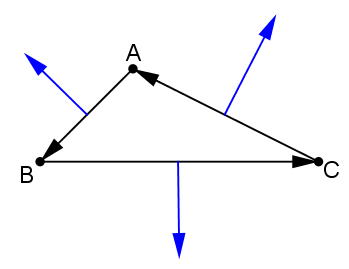
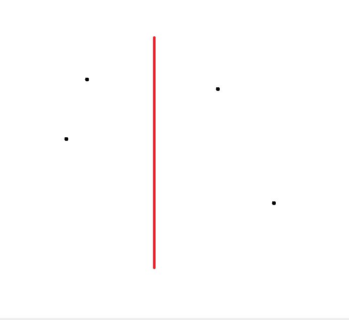
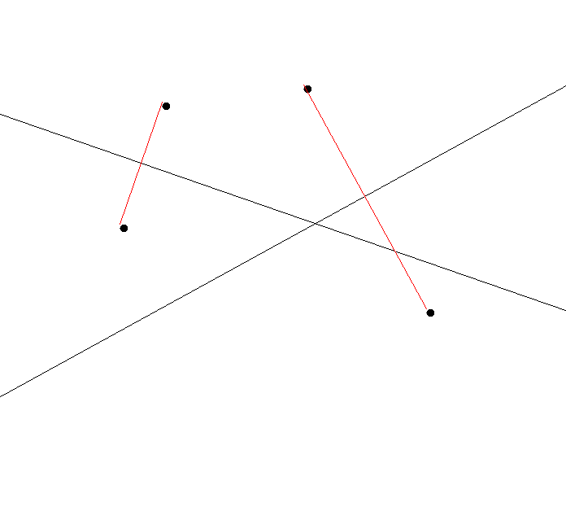
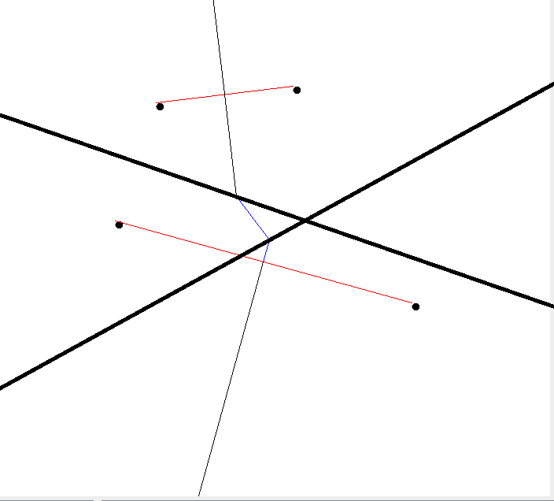

程式設計
資料結構
資料結構的部分我使用了以下三個資料結構:-
Point:儲存點的資料結構
double x;//儲存該點的x座標 double y;//儲存該點的y座標
-
Line:儲存線段的資料結構
Point a;//儲存線段的第一個點 Point b;//儲存線段的第二個點
-
Point_Two_Way:儲存兩點以及這兩點的中垂線
Point a;//第一個點 Point b;//第二個點 Line line;//儲存ab兩點的中垂線
三點解法
我一開始的作法是先求出外心座標，然後讓外心座標與三點的中點相連，最後靠著這個向量延伸出去，但是發現三角形的形狀如果是直角三角形或者鈍角三角形，此方法會有問題，於是後來想到有外積這個東西，先利用外積，將三個點逆時針排列，再來利用公式可以求出任兩點向外的法向量，最後讓這個法向量從外心直接延伸出去即可。 四點以上解法
演算法過程:
- 將點按照X軸排序之後，分成左右兩邊。
- 分別求出Voronoi Diagram。
- 找出convexhull的上下切線。
- 將兩邊的Voronoi Diagram merge 起來。
- 將多餘的線段消除
切割:
切割就是先將點依照X軸做排序之後再照Y軸排序，然後分成兩邊用ArrayList做儲存的動作。 分別求Voronoi Diagram:
就是做完切割之後，分別求出Convex hull以及Voronoi Diagram，如下圖，紅色的是Convexhull，黑色的是Voronoi Diagram。 找出convex hull的上下切線:
求出全部點的Convex Hull，找出橫跨左右兩部分的邊，即為上下切線。Merge:

先從convex hull的上切線當掃描線，以掃描線的法向量當作向量開始往下畫，碰到別的線段之後暫停(藍色為Hyper Plane，紅色為掃描線)。

接著因為碰到的是左邊的線段，所以左邊下面那個點當作新的掃描線其中一點，右邊的維持不變，然後新的掃描線的法向量繼續往下畫。 
接著碰到右邊的線段，右邊下面那個點當作新的掃描線其中一點，左邊維持不變，此時發現線段為convex hull的下切線，於是無限延伸出去，Merge結束。
銷線
 我是以Hyper plane碰到Voronoi Diagram之後，依照轉彎的方向去判斷，如上圖，AB線段與AE線段是逆時針轉，於是我們要刪除同樣逆時針旋轉的線段，以上圖來看，因為AB與AD是逆時針旋轉，所以我們要刪掉AD線段；假設AB與AE線段是順時針轉，我們就是要刪掉順時針旋轉的那個線段。
我是以Hyper plane碰到Voronoi Diagram之後，依照轉彎的方向去判斷，如上圖，AB線段與AE線段是逆時針轉，於是我們要刪除同樣逆時針旋轉的線段，以上圖來看，因為AB與AD是逆時針旋轉，所以我們要刪掉AD線段；假設AB與AE線段是順時針轉，我們就是要刪掉順時針旋轉的那個線段。